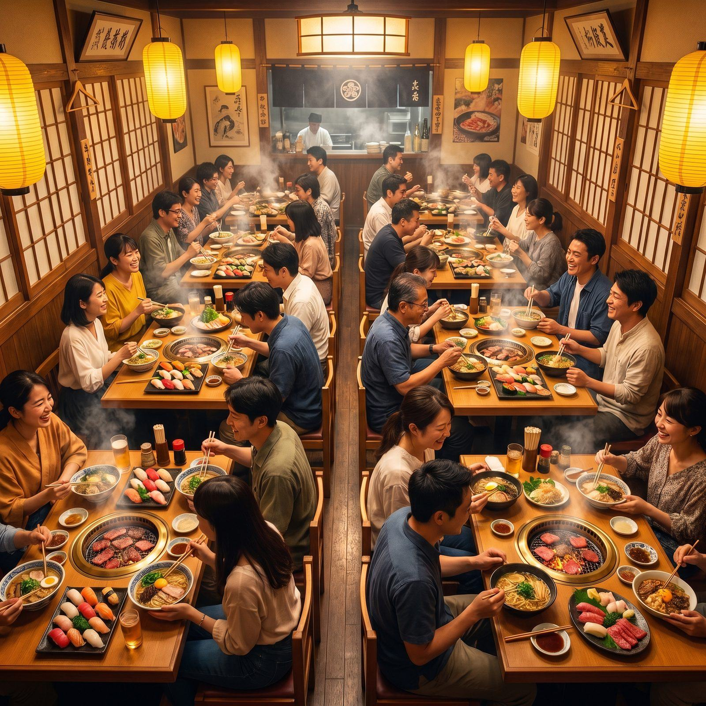
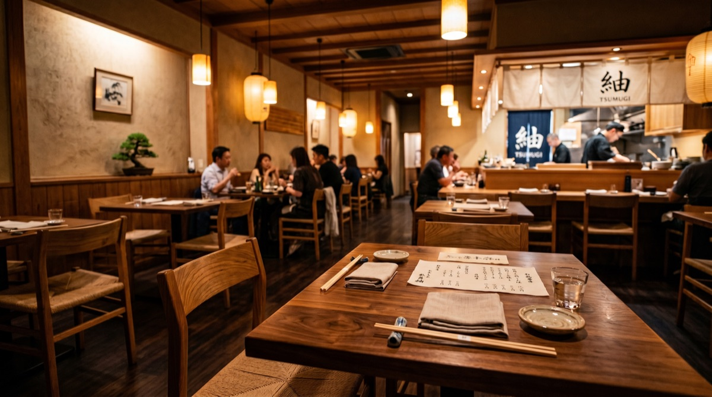

Challenges
訪日中国人は来ているのに、店舗が選ばれない理由
飲食店のインバウンド集客では、料理の魅力だけでなく「旅行前に見つかる」「比較時に信頼される」「来店前に迷わない」状態を作る必要があります。
日本語の公式サイトやGoogleマップだけでは、旅行前の中国SNS検索に表示されにくい状態です。
小紅書投稿、店舗名・地域名・料理名の検索キーワード、中国語プロフィールを整えます。
大衆点評や小紅書で店舗写真、メニュー、注文方法、予約情報が弱いと候補から外れやすくなります。
外観、席、人気料理、注文方法、価格帯、支払い方法を来店前に確認できる状態にします。
SNSで見ても予約、地図、メニュー、決済、店頭対応までつながらないと来店率が伸びません。
大衆点評、予約フォーム、Google/Apple地図、店頭案内をひと続きの導線にします。
Restaurant Blueprint
投稿から来店まで、飲食店向けに必要な素材を整理します。

Channel Design
飲食店は、3つの中国SNSを役割分担して使います。
料理、店内、注文体験、周辺観光との組み合わせを投稿し、旅行前の保存・比較に入る状態を作ります。
「東京 火鍋」「大阪 ラーメン」「京都 和食」など、地域名と料理名の検索導線を作ります。
大衆点評店舗情報、写真、口コミ、クーポン、地図導線を整え、候補比較から来店決定までを後押しします。
来店直前の確認媒体なので、営業時間・予約・支払い・アクセスを優先します。
抖音 / KOC料理のライブ感、職人性、行列感、限定メニューを動画化し、KOC投稿で信頼のある拡散を作ります。
短期キャンペーン、限定メニュー、オープン告知と相性が高い施策です。


Related Route
飲食店ページからつなぐべき導線
業界ページで終わらせず、事例、媒体、料金、相談へ迷わず進めるようにします。
FAQ
飲食店の中国インバウンド集客 FAQ
飲食店の中国インバウンド集客では何から始めるべきですか？
⌄まずは小紅書で検索される投稿テーマを整え、大衆点評で店舗情報・写真・口コミ・クーポンを整備することを推奨します。
大衆点評と小紅書は両方必要ですか？
⌄飲食店では両方を組み合わせる価値が高いです。小紅書は旅行前の発見・保存、大衆点評は来店前の比較・店舗確認に強みがあります。
予算が少ない場合でも始められますか？
⌄可能です。既存写真やメニュー情報を活用し、まずは小紅書投稿と大衆点評の店舗情報整備から始められます。